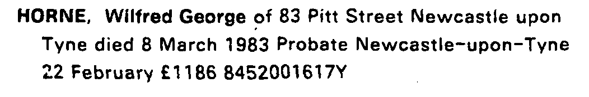
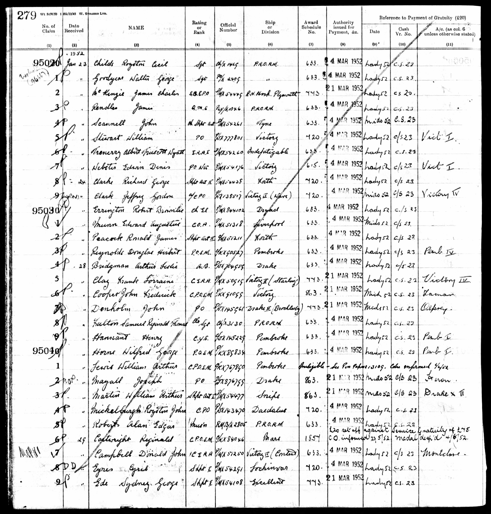
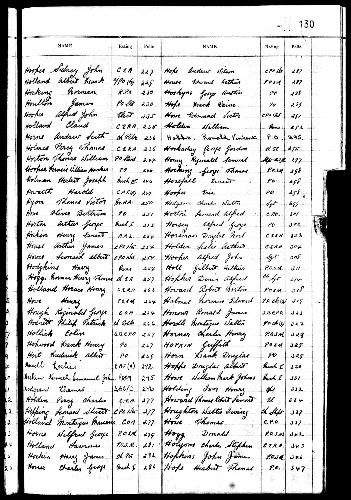
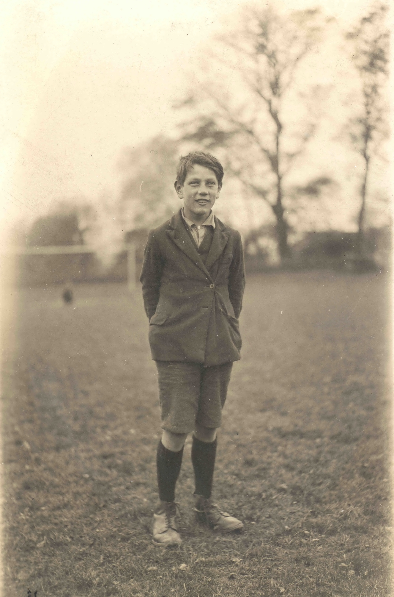
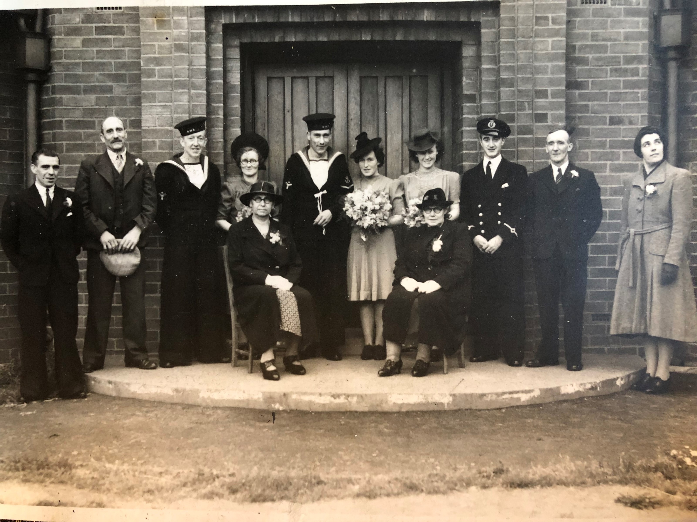
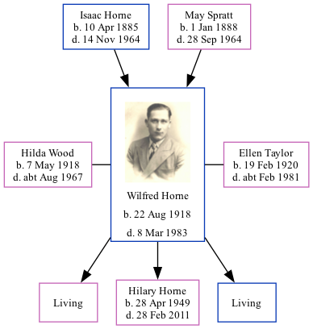

Wilfred George Horne 1918 - 1983
[ Home ] | [ Calendar ] | [ Surnames Index ] | [ Family History ]The 4th of 7 children of Isaac Horne (a hay trusser & thatcher heavy worker market gardener) and May Spratt, Wilfred Horne, the uncle of <a href="I1.html">Nigel Horne</a>, was born in Minster, Thanet, Kent, England on Aug 22, 1918<span class="citation">1,2,3,4</span> and was married twice - to Hilda Wood (<i>c.</i> Aug 1942 in North Shields, Tyne and Wear, England) Ellen Taylor (in 1970 in Newcastle Upon Tyne, Tyne and Wear, following the death of Hilda <i>c.</i> Aug 1967)<span class="citation">6</span>. He had 3 children with Hilda Wood: Gillian C, Hilary Ann and Adrian Keith.</p><p>Throughout his life, he lived at Pansy Cottage, Way, Minster, Thanet, Kent, England on Jun 19, 1921<span class="citation">1</span>; and at 83 Pitt Street, Newcastle Upon Tyne, Tyne and Wear in 1983. He served in the navy (<em>Royal Navy - Petty Officer Stoke Mechanic</em>).<p>He died on Mar 8, 1983 in Newcastle Upon Tyne, Tyne and Wear<span class="citation">2,4,5</span>.
Parents
- Isaac was born on Apr 10, 1885
- May was born in 1888
Children
- Hilary Ann was born on Apr 28, 1949
Citations
- 1921 Census Of England & Wales - Findmypast (was age 2 and the son of the head of the household)
- England & Wales deaths 1837-2007 - Findmypast
- England & Wales, Birth Index: 1916-2005 Online publication - Provo, UT, USA: The Generations Network, Inc., 2008.Original data - General Register Office. England and Wales Civil Registration Indexes. London, England: General Register Office. © Crown copyright. Published by permission of the Cont
- England & Wales, Death Index: 1984-2005 Online publication - Provo, UT, USA: The Generations Network, Inc., 2007.Original data - General Register Office. England and Wales Civil Registration Indexes. London, England: General Register Office. © Crown copyright. Published by permission of the Cont
- England & Wales Government Probate Death Index 1960-2019 - Findmypast
- England & Wales Marriages 1837-2005 - Findmypast
Media
Wilfred George Horne

Wilfred George Horne - probate

Wilfred George Horne - 2
Wilfred George Horne - Naval Record 1

Wilfred George Horne - Naval Record 2

Wilfred George Horne - 3

Wilfred George Horne - 4
Wilfred George Horne - 5
Marriage of Wilfred George Horne to Hilda Wood

Newcastle Journal - 9 Mar 1984

England & Wales marriages 1837-2008 - BMD/M/1942/3/AZ/000661/081
England & Wales deaths 1837-2007 - BMD/D/1983/1/AZ/000522/018
England & Wales births 1837-2006 - BMD/B/1918/3/AZ/000588/014
England & Wales Government Probate Death Index 1960-2019 - GBOR/GOVPROBATE/A/1984-1986/00580524
1921 Census Of England & Wales - GBC/1921/RG15/04430/0061/04
Family Tree
Generated by Ged2Site. Last updated on Jul 20, 2025